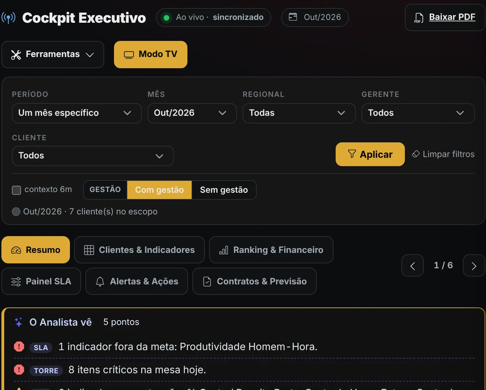
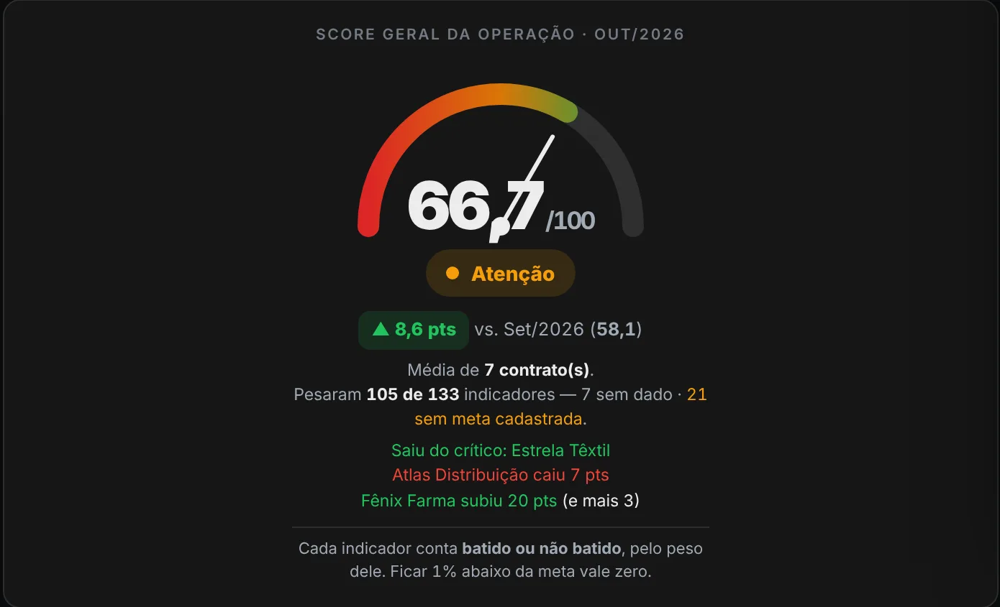

Em 20 minutos de conversa, mostramos onde sua operação perde tempo e informação, e o que vale digitalizar primeiro.
Quero meu diagnóstico gratuito
Quando você descobre, já não dá para corrigir.
Para saber o resultado, alguém precisa montar relatório.
Se a mensagem se perde, o pedido se perde junto.
A reunião começa discutindo qual número está certo.
Combinamos um horário de 20 minutos, por vídeo ou ligação.
Como o trabalho acontece hoje, onde a informação se perde e o que mais consome tempo.
O que digitalizar primeiro e por quê. Se fizer sentido seguir, enviamos uma proposta.
Painéis que se atualizam sozinhos, alertas antes do problema chegar ao cliente e plano de ação com dono e prazo. Feito a partir do seu processo, não de um modelo pronto.


Thiago Borba, fundador da VIRA Studio. Antes de construir sistemas, passou 14 anos dentro da operação, gerindo contratos, equipes e indicadores. Ele sabe como é depender do relatório de sexta-feira.
Marque o que acontece na sua empresa. Se der 3 ou mais, o diagnóstico vale a pena.
Sim. São 20 minutos de conversa, sem custo e sem compromisso de contratar.
Não. A maioria das empresas que atendemos começa com planilhas e WhatsApp, e é justamente por isso que a conversa ajuda.
Atendemos empresas de todo o Brasil. O diagnóstico e o acompanhamento são online.
Depende do escopo e do esforço de cada projeto. Depois do diagnóstico, se fizer sentido seguir, enviamos uma proposta detalhada.
A gente diz. Se o seu processo é padrão, um sistema pronto pode resolver, e você sai da conversa sabendo disso.
Chame no WhatsApp, conte como sua operação funciona hoje e combine o melhor horário.
Quero meu diagnóstico gratuito VIRA STUDIO
VIRA STUDIO